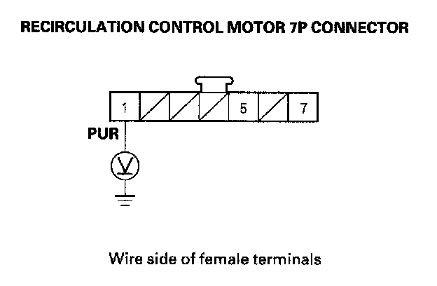
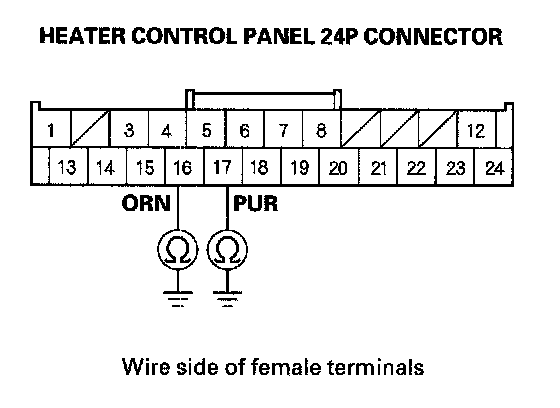
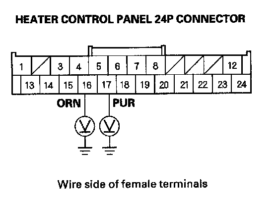
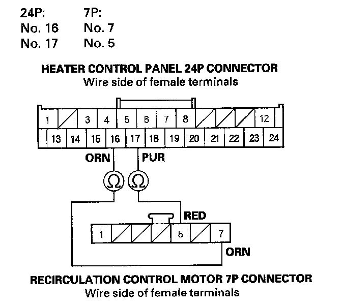

Recirculation Control Motor Circuit Troubleshooting
Recirculation Control Motor Circuit Troubleshooting1. Check the No. 36 (10 A) fuse in the under-dash fuse/relay box.
Is the fuse OK?
YES - Go to step 2.
NO - Replace the fuse, and recheck. If the fuse blows again, check for a short in the No. 36 (10 A) fuse circuit.
2. Disconnect the recirculation control motor 7P connector.
3. Turn the ignition switch ON (II).

4. Measure the voltage between the recirculation control motor 7P connector terminal No. 1 and body ground.
Is there battery voltage?
YES - Go to step 5.
NO - Repair open in the wire between the No. 36 (10 A) fuse in the under-dash fuse/relay box and the recirculation control motor.
5. Turn the ignition switch OFF.
6. Test the recirculation control motor.
Is the recirculation control motor OK?
YES - Go to step 7.
NO - Replace the recirculation control motor, or repair the recirculation control linkage or door.
7. Disconnect the heater control panel 24P connector.

8. Check for continuity between body ground and the heater control panel 24P connector terminals No.16 and No.17 individually.
Is there continuity?
YES - Repair any short to body ground in the wires between the heater control panel and the recirculation control motor.
NO - Go to step 9.

9. Turn the ignition switch ON (II), and check the same terminals for voltage to body ground.
Is there any voltage?
YES - Repair any short to power in the wires between the heater control panel and the recirculation control motor. This short may also damage the heater control panel. Repair the short to power before replacing the heater control panel.
NO - Go to step 10.
10. Turn the ignition switch OFF.

11. Check for continuity between the following terminals of the heater control panel 24P connector and the recirculation control motor 7P connector.
Is there continuity?
YES - Check for loose wires or poor connections at the heater control panel 24P connector and at the recirculation control motor 7P connector. If the connections are good, substitute a known-good heater control panel, and recheck. If the symptom/indication goes away, replace the original heater control panel.
NO - Repair any open in the wires between the heater control panel and the recirculation control motor.